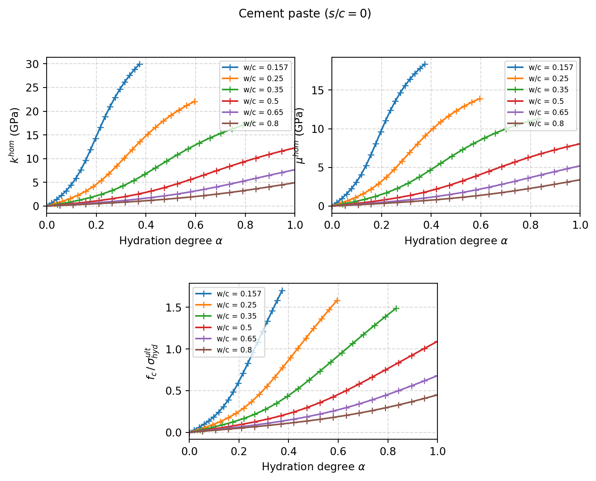
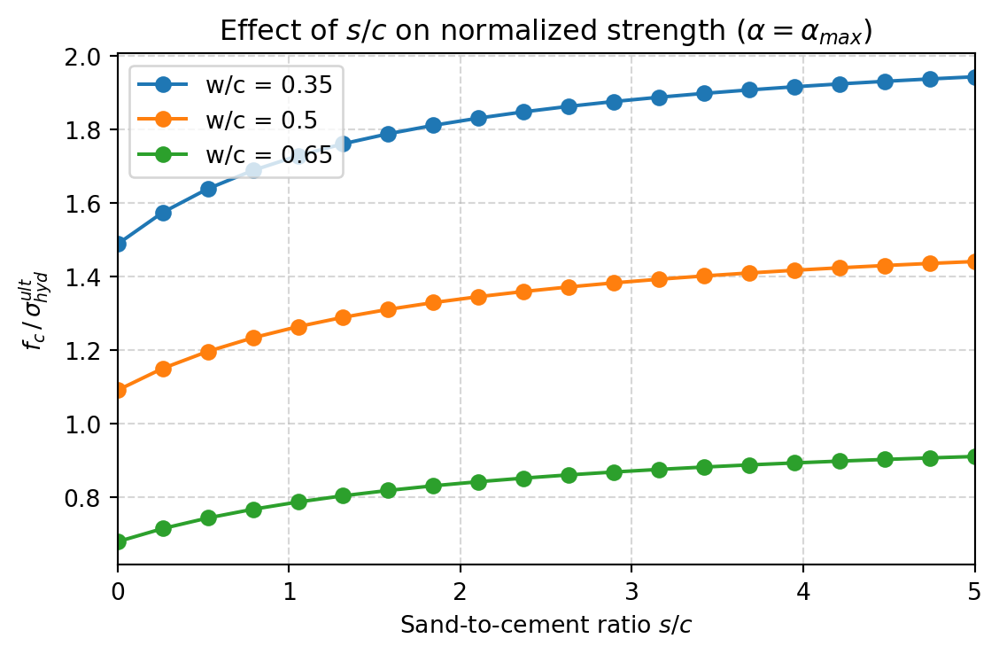

import numpy as np
from echoes import *
import math
import matplotlib.pyplot as plt
np.set_printoptions(precision=5, suppress=True)23 Quasi-brittle strength of cement paste and mortar
Multi-scale microstructure model
The model decomposes the mortar microstructure into three nested RVEs:
| Scale | RVE | Phases | Scheme |
|---|---|---|---|
| 1 | Hydrate Foam (HF) | Hydrates (needles) + water + air pores | SC |
| 2 | Cement Paste (CP) | HF matrix + clinker grains (spheres) | MT |
| 3 | Mortar (MO) | CP matrix + sand grains (spheres) | MT |
The key feature of this model — compared to the simpler two-scale model of Chapter 21 — is that the hydrate crystals at scale 1 are represented as needle-shaped inclusions (prolate spheroids with very large aspect ratio \(\omega \to \infty\)) with a random orientation distribution. This captures the disordered polycrystalline texture of the C-S-H gel.
Volume fractions
The volume fractions of each phase at scales 1 and 2 follow from stoichiometry (Powers model) as functions of the water-to-cement ratio \(w/c\) and the hydration degree \(\alpha \in [0,\,\alpha_{max}]\), where \(\alpha_{max} = \min(1,\, w/c\,/\,0.42)\):
\[ \begin{aligned} f_{clin}(\alpha) &= \frac{1-\alpha}{1+d_{clin}\,w/c} \\[4pt] f_w(\alpha) &= \frac{d_{clin}(w/c - 0.42\,\alpha)}{1+d_{clin}\,w/c} \\[4pt] f_{hyd}(\alpha) &= \frac{1.42\,d_{clin}/d_{hyd}\;\alpha}{1+d_{clin}\,w/c} \\[4pt] f_{air} &= 1 - f_{clin} - f_w - f_{hyd} \end{aligned} \tag{23.1}\]
The sand volume fraction in the mortar depends on the sand-to-cement ratio \(s/c\):
\[ f_{sand} = \frac{(s/c)\,/\,d_{sand}}{1/d_{clin} + w/c + (s/c)\,/\,d_{sand}} \tag{23.2}\]
The phase densities relative to water are \(d_{clin}=3.15\), \(d_{hyd}=2.073\), \(d_{sand}=2.648\).
# Densities relative to water
d_clin = 3.15
d_hyd = 2.073
d_san = 2.648
# Volume fractions (scales 1 & 2)
f_clin = lambda wc, alpha: (1 - alpha) / (1 + d_clin * wc)
f_w = lambda wc, alpha: d_clin * (wc - 0.42 * alpha) / (1 + d_clin * wc)
f_hyd = lambda wc, alpha: 1.42 * d_clin / d_hyd * alpha / (1 + d_clin * wc)
# Sand volume fraction in mortar (scale 3)
f_sand = lambda wc, sc: (sc / d_san) / (1. / d_clin + wc + sc / d_san)
# Maximum hydration degree
alpha_max = lambda wc: min(1., wc / 0.42)Material properties
The elastic properties of each constituent are:
| Phase | \(k\) (GPa) | \(\mu\) (GPa) |
|---|---|---|
| Clinker | 116.7 | 53.8 |
| Hydrates (C-S-H + portlandite) | 18.7 | 11.8 |
| Water | 0 | 0 |
| Air | 0 | 0 |
| Sand | 37.8 | 44.3 |
C_clin = stiff_kmu(116.7, 53.8)
C_hyd = stiff_kmu(18.7, 11.8)
C_w = tZ4 # zero stiffness
C_air = tZ4 # zero stiffness
C_san = stiff_kmu(37.8, 44.3)Three-scale elastic homogenization
Needle-shaped hydrates and orientation discretization
The hydrate crystals are modeled as prolate spheroids with aspect ratio \(\omega = 10^4\) (effectively needles). Their orientations are assumed uniformly distributed over the unit sphere. By symmetry, the orientation is parametrized by the polar angle \(\theta \in [0,\, \pi/2]\) and the distribution is discretized into \(n_\theta\) bins of equal solid-angle weight:
\[ f_{hyd}^{(i)} = f_{hyd} \cdot \bigl(\cos\theta_i^- - \cos\theta_i^+\bigr), \quad i = 0,\dots, n_\theta-1 \tag{23.3}\]
where \(\theta_i^-\) and \(\theta_i^+\) are the lower and upper bounds of bin \(i\), and \(\theta_i\) is its center. The hydrate foam RVE at scale 1 contains \(n_\theta\) oriented inclusion families and is homogenized with the Self-Consistent (SC) scheme:
\[ \mathbb{C}^{hom}_{HF} = \mathrm{SC}\!\left(\sum_{i=0}^{n_\theta-1} f_{hyd}^{(i)}\,\mathbb{C}_{hyd}^{(\theta_i)} + f_w\,\mathbb{C}_w + f_{air}\,\mathbb{C}_{air}\right) \tag{23.4}\]
def disc_theta(ntheta):
"""Discretize [0, pi/2] into ntheta orientation bins.
Returns (lower bounds, centers, upper bounds).
"""
thm = [0.] + [np.pi / 2 * (i - 0.5) / (ntheta - 1) for i in range(1, ntheta)]
th = [np.pi / 2 * i / (ntheta - 1) for i in range(ntheta)]
thp = [np.pi / 2 * (i + 0.5) / (ntheta - 1) for i in range(0, ntheta - 1)] + [np.pi / 2.]
return thm, th, thpThree-scale elastic model
At scale 2 the cement paste is obtained by embedding clinker grains in the hydrate foam matrix using Mori-Tanaka (MT):
\[ \mathbb{C}^{hom}_{CP} = \mathrm{MT}_{HF}\bigl(f_{clin}\,\mathbb{C}_{clin}\bigr) \tag{23.5}\]
At scale 3 the mortar is obtained by embedding sand grains in the cement paste matrix, again using MT:
\[ \mathbb{C}^{hom}_{MO} = \mathrm{MT}_{CP}\bigl(f_{sand}\,\mathbb{C}_{sand}\bigr) \tag{23.6}\]
Strength upscaling via derivative-based criterion
Theoretical framework
The macroscopic uniaxial compressive strength \(f_c\) of the mortar is upscaled from the phase-level strength \(\sigma^{ult}_{hyd}\) of the hydrates using the sensitivity of the effective stiffness to the hydrate shear modulus — a direct application of the framework in Chapter 19.
The compliance sensitivity matrix with respect to the shear modulus \(\mu_{hyd}\) of hydrate orientation bin \(\theta\) is:
\[ \mathbf{M}^{(\theta)} = \mathbf{S}^{hom}_{MO} \cdot \frac{\partial \mathbf{C}^{hom}_{MO}}{\partial \mu_{hyd}^{(\theta)}} \cdot \mathbf{S}^{hom}_{MO} \tag{23.7}\]
where \(\mathbf{S}^{hom}_{MO} = \bigl(\mathbf{C}^{hom}_{MO}\bigr)^{-1}\) is the effective compliance, and all quantities are \(6\times 6\) matrices in Kelvin-Mandel notation.
For uniaxial compression along \(\uu{e}_3\), the macroscopic strength normalized by \(\sigma^{ult}_{hyd}\) reads (Pichler and Hellmich, 2011):
\[ \boxed{\frac{f_c}{\sigma^{ult}_{hyd}} = \min_\theta \sqrt{\frac{f^{(\theta)}_{hyd}}{2\,\mu_{hyd}^2\,M^{(\theta)}_{33}}}} \tag{23.8}\]
where \(M_{33}\) is the \((3,3)\) entry of \(\mathbf{M}^{(\theta)}\) (compression axis), and
\[ f^{(\theta)}_{hyd} = f_{hyd}^{(i)} \cdot (1 - f_{clin}) \cdot (1 - f_{sand}) \tag{23.9}\]
is the absolute volume fraction of hydrates in orientation bin \(\theta\) within the full mortar. The factor \(2\mu_{hyd}^2\) converts the stiffness sensitivity into a deviatoric stress scale at the hydrate level.
Chain rule across three scales
The derivative \(\partial \mathbf{C}^{hom}_{MO} / \partial \mu_{hyd}^{(\theta)}\) propagates through three homogenization steps. It is assembled via the chain rule:
\[ \frac{\partial \mathbf{C}^{hom}_{MO}}{\partial \mu_{hyd}^{(\theta)}} = \sum_{\alpha=0}^{4}\sum_{\beta=0}^{4} \frac{\partial \mathbf{C}^{hom}_{MO}}{\partial \mathbf{C}^{hom}_{CP}[\alpha]} \cdot \left(\frac{\partial \mathbf{C}^{hom}_{CP}}{\partial \mathbf{C}^{hom}_{HF}[\beta]}\right)[\alpha] \cdot \left(\frac{\partial \mathbf{C}^{hom}_{HF}}{\partial \mu_{hyd}^{(\theta)}}\right)[\beta] \tag{23.10}\]
where indices \(\alpha, \beta \in \{0,\dots,4\}\) enumerate the five independent parameters of the transversely isotropic (TI) effective tensors \(\mathbb{C}^{hom}_{HF}\) and \(\mathbb{C}^{hom}_{CP}\). Each factor is obtained by one homogenize_derivative call per index:
| Factor | phase |
index |
scheme |
|---|---|---|---|
| \(\partial \mathbf{C}^{hom}_{HF}/\partial\mu_{hyd}^{(\theta)}\) | "HYD0" |
1 (TI: transverse \(\mu\)) |
SC on rve2_hf |
| \(\partial \mathbf{C}^{hom}_{CP}/\partial\mathbf{C}^{hom}_{HF}[\beta]\) | "HF" |
beta |
MT on rve_cp |
| \(\partial \mathbf{C}^{hom}_{MO}/\partial\mathbf{C}^{hom}_{CP}[\alpha]\) | "CP" |
alpha |
MT on rve_mo |
Complete homogenization and strength function
The following function assembles all three scales (elastic + strength) in a single call.
Function mortar_strength() — three-scale homogenization + failure criterion
def mortar_strength(wc, alpha=-1., sc=0., omega=10000., ntheta=20):
"""Three-scale homogenization of mortar: elastic stiffness + normalized strength.
Parameters
----------
wc : water-to-cement ratio
alpha : hydration degree (default: alpha_max)
sc : sand-to-cement ratio (0 = pure cement paste)
omega : needle aspect ratio
ntheta: number of orientation bins
Returns
-------
[True, C_mo, fc] — C_mo: effective stiffness; fc: f_c / sigma_hyd^ult
[False] — computation failed (e.g. negative water volume fraction)
"""
if alpha < 0.:
alpha = alpha_max(wc)
if alpha == 0.:
return [True, tensor([0, 0]), 0.]
fclin = f_clin(wc, alpha)
fw = f_w(wc, alpha); ftw = fw / (1 - fclin)
if fw < 0.:
return [False]
fhyd_val = f_hyd(wc, alpha); fthyd = fhyd_val / (1 - fclin)
fair = 1 - fclin - fw - fhyd_val; ftair = fair / (1 - fclin)
fhsan = f_sand(wc, sc)
# ----------------------------------------------------------------
# Scale 1 — Hydrate Foam: fast isotropic SC for convergence
# ----------------------------------------------------------------
rve_hf = rve()
rve_hf["HYD"] = ellipsoid(shape=spheroidal(omega), symmetrize=[ISO],
fraction=fthyd, prop={"C": C_hyd})
rve_hf["W"] = ellipsoid(shape=spherical, fraction=ftw, prop={"C": C_w})
rve_hf["AIR"] = ellipsoid(shape=spherical, fraction=ftair, prop={"C": C_air})
C_hf = homogenize(prop="C", rve=rve_hf, scheme=SC,
verbose=False, epsrel=1.e-6, maxnb=100)
if math.isnan(C_hf.k) or math.isnan(C_hf.mu):
return [False]
# Orientation-resolved HF RVE (ntheta bins, TI needles)
thm, theta, thp = disc_theta(ntheta)
rve2_hf = rve()
for i in range(ntheta):
rve2_hf["HYD" + str(i)] = ellipsoid(
shape=spheroidal(omega, theta[i]), symmetrize=[TI],
fraction=fthyd * (np.cos(thm[i]) - np.cos(thp[i])),
prop={"C": C_hyd})
rve2_hf["W"] = ellipsoid(shape=spherical, fraction=ftw, prop={"C": C_w})
rve2_hf["AIR"] = ellipsoid(shape=spherical, fraction=ftair, prop={"C": C_air})
# Seed with converged C_hf; run 1 SC step to update oriented-needle Eshelby tensors
rve2_hf.set_prop("C", C_hf)
homogenize(prop="C", rve=rve2_hf, scheme=SC,
verbose=False, epsrel=1.e-3, maxnb=1)
# ----------------------------------------------------------------
# Scale 2 — Cement Paste: MT with HF matrix
# ----------------------------------------------------------------
rve_cp = rve(matrix="HF")
rve_cp["HF"] = ellipsoid(shape=spherical, fraction=1 - fclin,
prop={"C": tensor(C_hf.array, TI)})
rve_cp["CLIN"] = ellipsoid(shape=spherical, fraction=fclin,
prop={"C": C_clin})
C_cp = homogenize(prop="C", rve=rve_cp, scheme=MT, verbose=False)
# ----------------------------------------------------------------
# Scale 3 — Mortar: MT with CP matrix
# ----------------------------------------------------------------
rve_mo = rve(matrix="CP")
rve_mo["CP"] = ellipsoid(shape=spherical, fraction=1 - fhsan,
prop={"C": tensor(C_cp.array, TI)})
rve_mo["SAN"] = ellipsoid(shape=spherical, fraction=fhsan,
prop={"C": C_san})
C_mo = homogenize(prop="C", rve=rve_mo, scheme=MT, verbose=False)
# ================================================================
# Derivative chain rule for strength (eq. {#eq-chain})
# ================================================================
rve2_hf.set_param_eshelby(algo=NUMINT, epsroots=0.,
epsabs=1.e-3, epsrel=1.e-3, maxnb=100000)
rve_cp.set_param_eshelby(algo=NUMINT, epsroots=0.,
epsabs=1.e-3, epsrel=1.e-3, maxnb=100000)
rve_mo.set_param_eshelby(algo=NUMINT, epsroots=0.,
epsabs=1.e-3, epsrel=1.e-3, maxnb=100000)
# Scale 3: dC_mo / dC_cp[alpha] (alpha = 0..4, TI parameters of CP)
dC_mo_dC_cp = [
homogenize_derivative(prop="C", rve=rve_mo, scheme=MT,
phase="CP", index=i, verbose=False).array
for i in range(5)
]
# Scale 2: dC_cp / dC_hf[beta] (beta = 0..4, TI parameters of HF)
dC_cp_dC_hf = [
homogenize_derivative(prop="C", rve=rve_cp, scheme=MT,
phase="HF", index=i, verbose=False).paramsym(sym=TI)
for i in range(5)
]
# Scale 1: dC_hf / dmu_hyd^(theta=0) (horizontal needles, index=1 = transverse mu_T)
# The general loop over all bins (range(ntheta)) is commented out; only the
# most critical orientation (theta=0, bin 0) is used here.
dC_hf_dmutheta = [
homogenize_derivative(prop="C", rve=rve2_hf, scheme=SC,
phase="HYD0", index=1, sym=TI, verbose=False).paramsym(sym=TI)
] # one entry per orientation evaluated; generalize to range(ntheta) for full minimization
# Assemble chain rule and compute strength for each orientation bin
fc_vals = []
for itheta, dC_hf_dmu in enumerate(dC_hf_dmutheta):
# Double sum over TI parameter indices
dC = sum(
[dC_mo_dC_cp[a] * dC_cp_dC_hf[b][a] * dC_hf_dmu[b]
for b in range(5) for a in range(5)],
np.zeros((6, 6))
)
# Compliance sensitivity: M = S_hom . dC . S_hom (eq. {#eq-M-sens})
Shom = np.linalg.inv(C_mo.array)
M = Shom.dot(dC.dot(Shom))
# Absolute hydrate volume fraction for this bin in the full mortar
f = rve2_hf["HYD" + str(itheta)].fraction * (1 - fclin) * (1 - fhsan)
# Normalized strength (eq. {#eq-fc}): M[2,2] = M_33 in 0-based indexing
fc_val = 1. / np.sqrt(M[2, 2] * 2 * C_hyd.mu**2 / f)
fc_vals.append(fc_val)
fc = min(fc_vals) if fc_vals else 0.
if math.isnan(fc):
fc = 0.
return [True, C_mo, fc]
Note
Why orientation bin 0? Bin 0 corresponds to \(\theta_0 = 0\), i.e. needles lying perpendicular to the compression axis \(\uu{e}_3\). For a uniaxial compressive loading this orientation maximizes \(M_{33}\) and therefore minimizes the strength \(f_c\), making it the critical orientation. The general procedure is to evaluate all \(n_\theta\) bins and take the minimum, as indicated by the commented-out range(ntheta) in the original script.
Results
The following code computes the evolution of the effective stiffness moduli (\(k\), \(\mu\)) and the normalized compressive strength \(f_c/\sigma^{ult}_{hyd}\) as a function of the hydration degree \(\alpha\) for several water-to-cement ratios \(w/c\), for pure cement paste (\(s/c=0\)).
Figure — compressive strength vs hydration degree
wc_list = [0.157, 0.25, 0.35, 0.50, 0.65, 0.80]
# ── Figure 1 : évolution avec α (pâte de ciment, s/c = 0) ────────────────
fig = plt.figure(figsize=(9, 6.5))
gs = fig.add_gridspec(2, 4, hspace=0.45, wspace=0.35)
ax_k = fig.add_subplot(gs[0, 0:2])
ax_mu = fig.add_subplot(gs[0, 2:4])
ax_fc = fig.add_subplot(gs[1, 1:3])
for wc in wc_list:
lalpha, lk, lmu, lfc = [], [], [], []
for alpha in np.linspace(min(wc / 0.42, 1.), 0., 20):
res = mortar_strength(wc, alpha, sc=0.)
if res[0]:
lalpha.append(alpha)
lk.append(res[1].k)
lmu.append(res[1].mu)
lfc.append(res[2])
label = f"w/c = {wc}"
ax_k.plot(lalpha, lk, marker='+', label=label)
ax_mu.plot(lalpha, lmu, marker='+', label=label)
ax_fc.plot(lalpha, lfc, marker='+', label=label)
for ax, ylabel in [(ax_k, r"$k^{hom}$ (GPa)"),
(ax_mu, r"$\mu^{hom}$ (GPa)"),
(ax_fc, r"$f_c\,/\,\sigma^{ult}_{hyd}$")]:
ax.set_xlabel(r"Hydration degree $\alpha$")
ax.set_ylabel(ylabel)
ax.set_xlim(0., 1.)
ax.grid(True, ls='--', alpha=0.5)
ax.legend(fontsize=7)
plt.suptitle("Cement paste ($s/c = 0$)", fontsize=11)
plt.show()
# ── Figure 2 : effet de s/c sur la résistance (α = α_max) ────────────────
fig2, ax2 = plt.subplots(figsize=(6, 4))
for wc in [0.35, 0.50, 0.65]:
lsc, lfc = [], []
for sc in np.linspace(0., 5., 20):
res = mortar_strength(wc, sc=sc)
if res[0] and res[2] > 0.:
lsc.append(sc)
lfc.append(res[2])
ax2.plot(lsc, lfc, marker='o', label=f"w/c = {wc}")
ax2.set_xlabel(r"Sand-to-cement ratio $s/c$")
ax2.set_ylabel(r"$f_c\,/\,\sigma^{ult}_{hyd}$")
ax2.set_xlim(0., 5.)
ax2.grid(True, ls='--', alpha=0.5)
ax2.legend()
ax2.set_title(r"Effect of $s/c$ on normalized strength ($\alpha = \alpha_{max}$)")
plt.tight_layout()
plt.show()

Figure 1 shows that the normalized strength \(f_c/\sigma^{ult}_{hyd}\) increases monotonically with hydration degree and decreases with \(w/c\), consistent with the experimental trends reported in (Pichler and Hellmich, 2011). The absolute compressive strength (MPa) is recovered by multiplying by \(\sigma^{ult}_{hyd}\), which (Pichler and Hellmich, 2011) calibrate to approximately 70–90 MPa for typical C-S-H.
Figure 2 illustrates the effect of the sand content on the normalized strength at full hydration (\(\alpha = \alpha_{max}\)). Increasing \(s/c\) dilutes the hydrate foam and reduces the effective strength, with the effect being more pronounced at lower \(w/c\) ratios.
\(\,\)